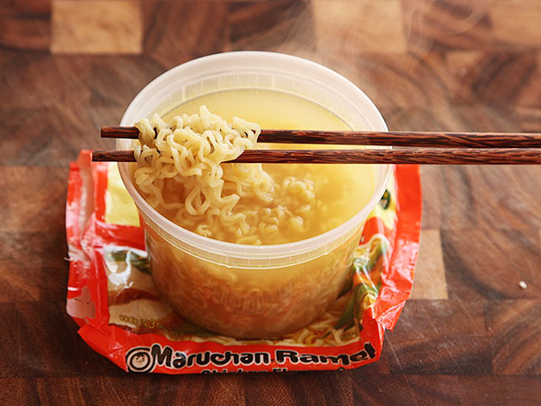

Simple Recipe
Top Roman Noodles
3 minutes to prepare
This is a recipe from my childhood that has reoccured in my college life. Super easy quick meal that costs close to nothing to make
Ingredients
- Water
- Top Roman (noodles/seasoning)
- Any other seasonings of your choice (season salt, obey, pepper, etc.) *
* optional
Instructions
- Boil water on stove top
- Place noodles in pot after water boils
- Let noodles boil with water for 3-4 minutes
- Strain about 90% of water from noodles
- Poor noodles in bowl and season to your taste
